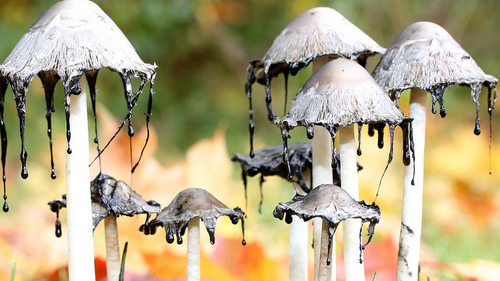

Part of this world is inhabited by the mysterious thing we have come to call mushrooms. These organisms don't belong to the kingdom of plants or animals and instead belong to that of the fungus. However what we see of the mushroom, is actually only part of a much larger network. Like how plants have roots, mushrooms stay connected through mycelium. These interconnected strings can range from being so small you can not see it, to being larger than three blue whales combined(such as the giant Armillaria ostoyae found in Oregon). With this article, I hope I can teach you something new about the many interesting things that mushrooms can do.
a picture of some ink cap mushrooms.
Perhaps one of the largest and well known uses of fungi, is penicillium. From this fungus we have been able to create penicillin, an antibiotic responsible for saving countless lives. There's also been countless other mushrooms used even for fighting things like breast cancer. Meanwhile on the much more controversial side, is the magic mushroom. Consumption will have a hallucinogenic effect, and can be used for reducing the symptoms of depression without the dulling of emotions. However some individuals taking this drug have experienced dangerous effects as opposed to positive ones including but not limited to fear, psychosis and anxiety. Therefore this drug is typically not advised by any medical professional and is even illegal in several countries and states.
For a very long time mushrooms have been used in our cooking. not only are they easy to forage or grow but they are also rich in nutrition, providing you know which mushrooms to pick. After all some slight differences in looks of mushroom can be the difference between a tasty meal or possibly even death.
Socials